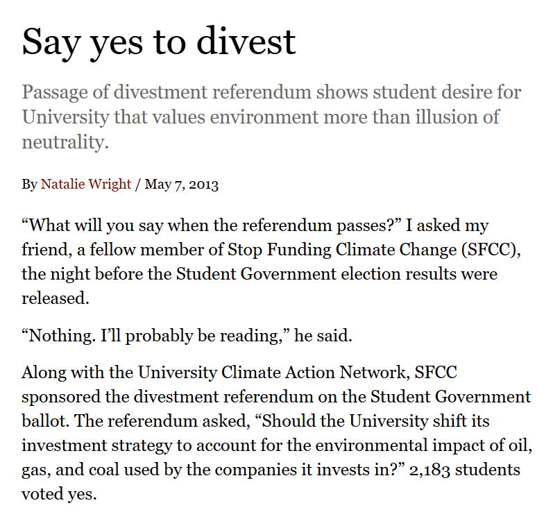
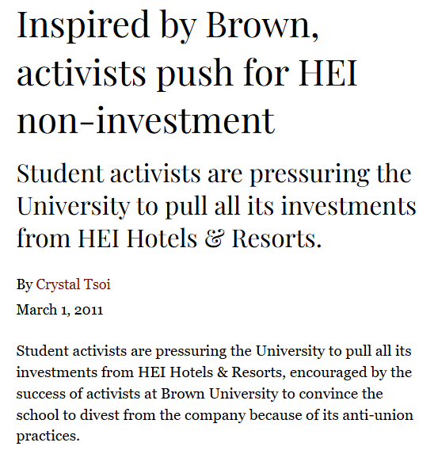
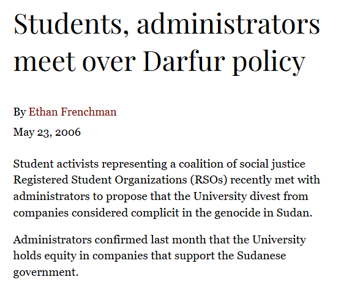
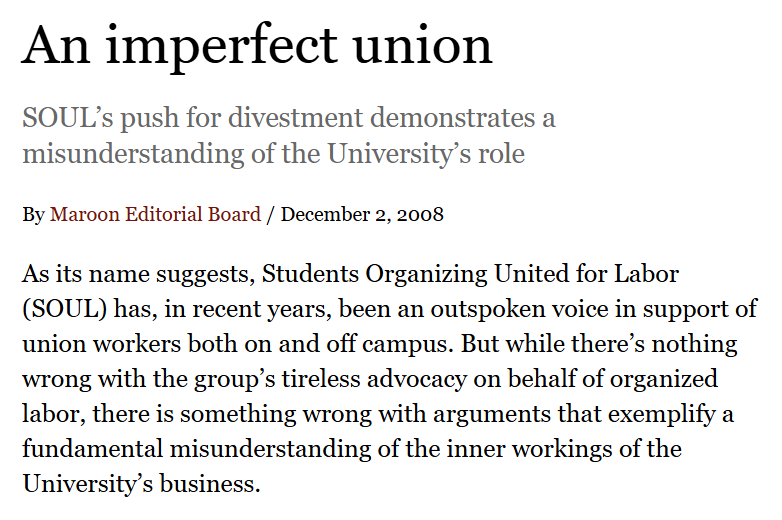
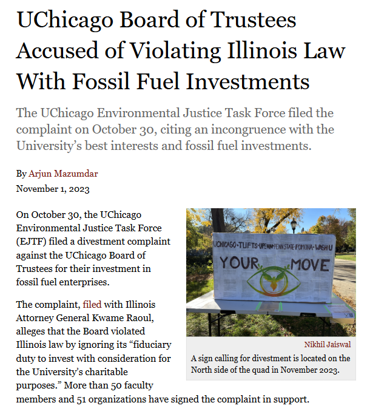
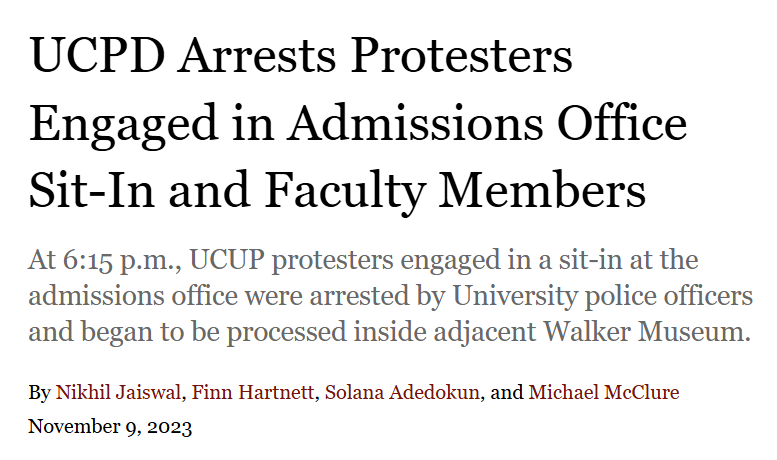
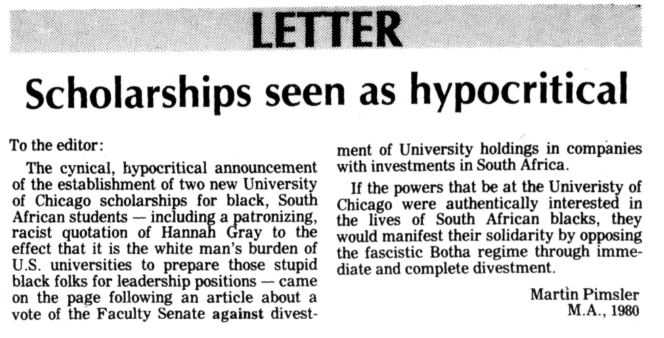

On April 29, 2024, pro-Palestine students at the University of Chicago joined students at over 40 other universities across the nation in forming an encampment to protest the war in Gaza. Members of the encampment supported withdrawing the university's investments from weapons manufacturers and the Israeli government in order to pressure the Israeli government to improve living conditions in Gaza.
The encampment had not sprung up out of nowhere. Indeed, online searches for the word "divestment" spiked that week in Illinois, indicating curiosity and even confusion about protesters' demands. To better understand the context behind the recent surge in activism, the Maroon's data desk dove into our digital archives.
The Maroon's records reveal that the history of divestment activism at UChicago spans seven major causes, various approaches to activism, and a wide range of responses from the University administration. According to the archives, students first protested for divestment on January 23, 1967, when 200 protestors picketed in front of Continental Illinois Bank to oppose the University's use of a bank that made loans to the South African apartheid government.
Later that year, a committee appointed by then University of Chicago President George Beadle released the Kalven Report, a document which recommended that academic institutions refrain from taking official stances on social issues in order to protect free speech.
For the next half century, members of the campus community attempted, through writing letters, holding rallies, and even filing legal complaints, to help shape the moral direction of the university through its purse. In response, the University administration has cited the Kalven Report as the primary reason that it has abstained from substantially engaging on the divestment issue. The ultimate outcome of this deadlock seems to hinge on a fundamental question: What right does the campus community have to exert influence over its institution?
Scroll below to explore UChicago's history of divestment activism, starting from the present day and going back to the 1960s.
I. What causes did organizers promote?
2013-present: Palestine
A series of Letters to the Editor for and against divestment in 2013 are the first records of Palestine-related divestment activism at UChicago, marking over a decade since this idea was broached on campus. Momentum on the issue built steadily until it peaked with last year's encampment.
2012-present: Climate change
Beginning around 2012, the fossil fuel divestment movement triggered the most intensive divestment activism on campus in decades. Related student organizations have steadily grown, multiplied, and evolved, from the University of Chicago Climate Action Network in 2012 to Stop Funding Climate Change in 2013 to the Environmental Justice Task Force in 2021.
2016: Uyghur rights
Students in the College Council passed a resolution for the University to divest from China due to the country's treatment of Uyghurs—a Muslim minority ethnic group—and Tibetans.
2008-2016: Labor rights
In 2012, a national movement emerged against the company HEI Hotels and Resorts, which activists accused of union suppression. The University of Chicago had $50 million invested in the company at the time.
2010-2012: Socially Responsible Investment Committee
Since divestment activism began, the Investment Committee of the University Board of Trustees has overseen University investments. To this day, this body does not have student, faculty, or staff representation.
In an effort to establish a more systemic approach to divestment-related activism, students and faculty campaigned for the creation of a Socially Responsible Investment Committee (SRIC) to review current and potential University investments. No agreement was reached with the University's administration.
The last known mention of SRIC occurred in 2013, indicating that the committee is no longer active.
2006-2008: Sudan
Students met with the administration multiple times to discuss divestment from Sudan, where wartime human rights violations are still occurring twenty years later. No agreement was reached with the University administration.
1967-1986: South Africa
"The protest against U.S. involvement in South Africa has a long history."
In 1967, years before the word "divestment" was used to describe such movements, 200 students picketed outside Continental Illinois Bank to protest the University's holdings in the bank, which made loans to the South African apartheid government. Twenty-four protestors were arrested within the day.
The Maroon archives show few other mentions of divestment until ten years later, when momentum gathered at campuses across the country.
By the 1970s, the Board of Trustees was split: while some agreed with the cause, others decidedly did not. Some trustees had racist justifications for opposing divestment.
"The University's been doing the same thing [investing only in white businesses] on the South Side since 1954. No one said anything about that, why is everyone getting upset about a few million blacks in South Africa?"
II. How did organizers achieve their goals?
Of the 151 instances of divestment-related activism found in the Maroon's archives, 47 percent can be categorized as letter-writing, including open letters, op-eds, Letters to the Editor, and petitions. The Maroon's own Editorial Board has issued opinions during different divestment movements, including a piece in favor of divesting from South Africa and one against divesting from HEI.
Since the turn of the century, protestors have increasingly turned to rallies—and encampments. Still, such demonstrations are not a new tactic; the first recorded divestment action at UChicago was a picket line in 1967. Overall, protests constituted 35 percent of divestment actions.
The remaining 18 percent of actions has included several long-term projects. In 1978, a student analyzed UChicago stocks invested in South Africa and found that the school had not profited from its investments. In 1986, the Student Advisory Committee to the University President prepared a more formal report on divestment from South Africa. And in 2014, climate activists at UChicago wrote a 62-page report, commissioned by Zimmer, on the practical and moral arguments for and against divestment. In 2023, EJTF filed a legal complaint against the Board of Trustees with the Office of the Illinois Attorney General.
III. How did the administration respond?
Recorded history of divestment movements at UChicago spanned six administrations, from Beadle, the seventh president of UChicago, to Paul Alivisatos, the 14th president. Each administration had its own approach, from choosing to directly engage with students to disregarding their efforts.
Six major divestment-related protests documented in the Maroon have resulted in the arrest of student protestors by University or city police, for a total of six arrests. Half of these have occurred during the Alivisatos administration. (Because this article considers only events that directly mention divestment, this number is an undercount of all arrests related to broader movements around Palestine, climate change, and other causes.)
The University has used disciplinary action in response to only two protests, and never in conjunction with police action.
Regardless of the protestors' strategies, the administration's response, or the benefiting cause, not a single dollar has been divested in the 57 years since the first group of students picketed Continental Illinois Bank.
It is difficult to determine whether campus activism directly caused successive administrations to take action or if these actions were at all effective in addressing the intended issues. Yet, many policy changes have been passed in the intervening years that support students' championed causes in other ways.
In 1985, after 18 years of campus activism, Gray signed a partnership with South African universities to increase opportunities for South African students in the United States, as well as to conduct research into social change in South Africa. In 2007, the Zimmer administration established a support fund of $200,000 for research on Sudan, part of which later supported the nonprofit Lost Boys Rebuilding Southern Sudan. In 2021, eight years after the formation of the first fossil fuel divestment-related student group at UChicago, Alivisatos announced a faculty group focused on sustainability. And in 2024, following a week of campus protests, Provost Katherine Baicker agreed to start a Gaza Scholars at Risk Initiative, which would support up to eight scholars affected by the war in Gaza. In each of these cases, activists criticized the concessions as disingenuous, or falsely promised.
IV. What next?
Alivisatos sent the following text in an email to the student body on April 29, 2024:
I believe the protesters should also consider that an encampment, with all the etymological connections of the word to military origins, is a way of using force of a kind rather than reason to persuade others. For a short period of time, however, the impact of a modest encampment does not differ so much from a conventional rally or march.
With only the above email as context, a member of campus might have assumed that last year's demonstrations had no precedent beyond pro-Palestine activism. Yet the Maroon's archives reveal a longer history, in which campus activists used various forms of reason to persuade the administration to divest. It seems at times as if history is repeating itself, as each new generation rediscovers divestment and each new administration blocks it. Universities are certainly peculiar environments: excluding faculty and staff, they are some of the only institutions with almost 100 percent turnover every four years. Institutional knowledge is incredibly difficult to retain. And yet, this constant churn of ideas may be a double-edged sword: universities are also historically at the forefront of social change.
While the University of Chicago administration was the first to adopt the idea of institutional neutrality among colleges, in the fifty years since, campus activists have persisted in arguing that the administration cannot practice the neutrality it preaches. As divestment organizing continues and universities across the U.S. search for examples of how to respond, UChicago's action—or lack thereof—could set a precedent for years to come.
Further reading
Methodology
This project focused on pro-divestment activism and the administration's response. Student- or faculty-led counter-activism events were not included due to project scope. A pro-divestment activism event was defined as follows: 1. all articles from the Maroon website or digitized archives which contained the word "divest" from search results; 2. had divestment as the main subject, excluding meta-commentary on effective strategies for divestment activism or histories of divestment activism; 3. defined divestment as withdrawing current investments, not declining to renew contracts or other related topics; 4. could be defined as a discrete instance, whether as a news event or a publication, excluding duplicate coverage of the same event; 5. were located on UChicago campus or involved UChicago students, excluding reporting about other schools or Chicago city politics.
Access the data for this project.
Find the code for this project on GitHub.